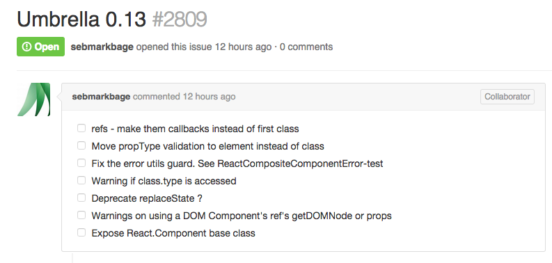
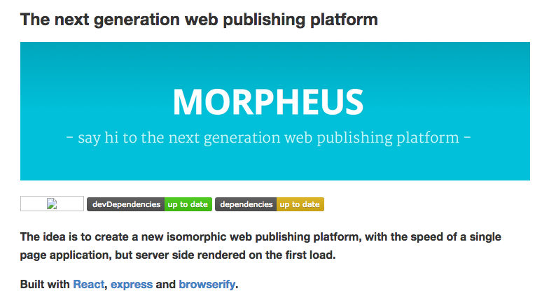
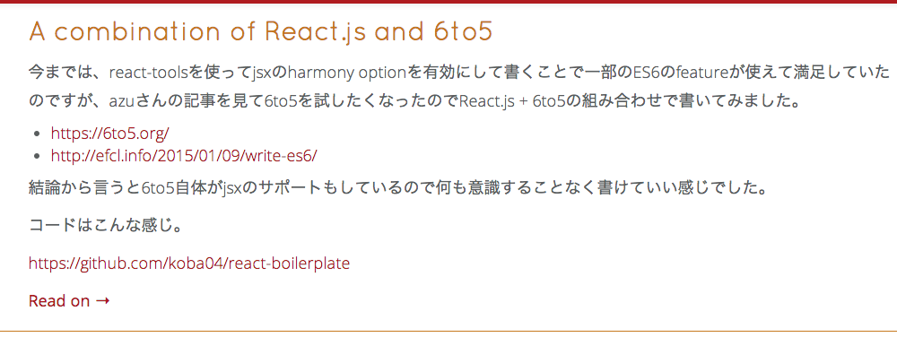
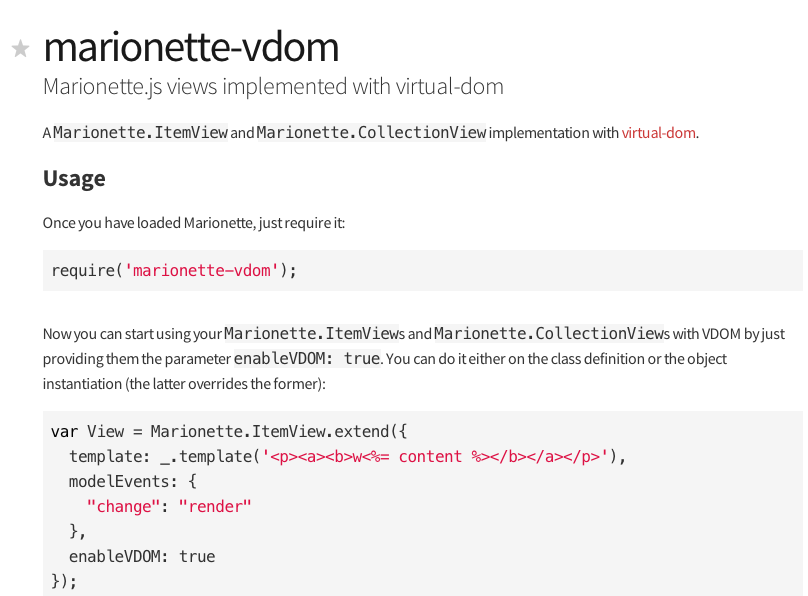
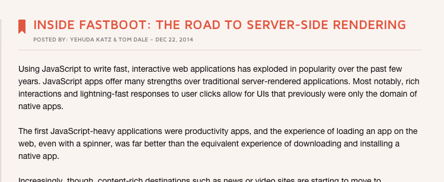

class: center, middle # \#reactsushi 2015 Jan @koba04 --- class: center, middle ## React.js is becoming popular in Japan!! --- class: center, middle ## Next version? --- ## Umbrella  https://github.com/facebook/react/issues/2809 --- class: center, middle ## isomorphic --- ## Morpheus  https://github.com/vesparny/morpheus --- class: center, middle ## ES6 --- ## 6to5♥  http://blog.koba04.com/post/2015/01/13/a-combination-of-reactjs-and-6to5/ --- class: center, middle ## At the time, Marionette.js is ... --- # Investigate first class support for virtual DOM \#2126 https://github.com/marionettejs/backbone.marionette/issues/2126 --- ## samccone/Marionette.VDOMView https://github.com/samccone/Marionette.VDOMView ```javascript var View = VDOMItemView.extend({ template: _.template( '<p>VIEW <%= cid %></br>' + '<b><%= text %></b></br>' + '<input class="input" value="<%= text %>"/></br>' + '<textarea class="input"<%= text %</textarea</p>' ), events: { "input .input": function(e){ this.model.set('text', e.currentTarget.value) } }, templateHelpers: function() { return { cid: this.cid } }, modelEvents: { "change": "render" } }); ``` --- class: center, middle ## VDOMItemView ??? --- # VDOMItemView ```javascript var diff = require('virtual-dom/diff'); var patch = require('virtual-dom/patch'); var createElement = require('virtual-dom/create-element'); var virtualize = require('vdom-virtualize'); module.exports = Marionette.ItemView.extend({ setElement: function(element, delegate) { Marionette.ItemView.prototype.setElement.apply(this, arguments); if (this.el) { this.virtualEl = virtualize(this.el); if (!this.$el.parent().length || this.$el.parent('body').length) { this.rootEl = createElement(this.virtualEl); this.$el.html(this.rootEl); } } return this; }, attachElContent: function(html) { var newVirtualEl = virtualize.fromHTML(html); var patches = diff(this.virtualEl, newVirtualEl); this.rootEl = patch(this.rootEl, patches); this.virtualEl = newVirtualEl; return this; } }); ``` ---  --- # virtual-dom & vdom-virtualize https://github.com/Matt-Esch/virtual-dom https://github.com/marcelklehr/vdom-virtualize or https://github.com/TimBeyer/html-to-vdom **virtual-dom may become a base VirtualDOM implementation.** --- class: center, middle ## At the time, ember.js is ... --- # FastBoot!!!!  http://emberjs.com/blog/2014/12/22/inside-fastboot-the-road-to-server-side-rendering.html --- # HTMLBars https://github.com/tildeio/htmlbars HTML + handlebars HTMLBars understands your markup 1. Parse template with vanilla Handlebars 1. Convert to HTMLBars AST 1. Build document fragment generator from HTMLbars AST --- ```html <p>{{name}}</p> ``` ```js (function() { return { isHTMLBars: true, blockParams: 0, cachedFragment: null, hasRendered: false, build: function build(dom) { var el0 = dom.createElement("p"); return el0; }, render: function render(context, env, contextualElement) { var dom = env.dom; var hooks = env.hooks, content = hooks.content; dom.detectNamespace(contextualElement); var fragment; if (this.cachedFragment === null) { fragment = this.build(dom); if (this.hasRendered) { this.cachedFragment = fragment; } else { this.hasRendered = true; } } if (this.cachedFragment) { fragment = dom.cloneNode(this.cachedFragment, true); } var morph0 = dom.createMorphAt(fragment,-1,-1); content(env, morph0, context, "name"); return fragment; } }; }()) ``` --- # simple-dom https://github.com/krisselden/simple-dom A minimal DOM JS implementation. (small subset of the W3C DOM specification, optimized for performance) It is used for htmlbars running on server. --- class: center, middle ### <x-sushiyuki type="akami">Thanks</x-sushiyuki> http://koba04.github.io/slides/reactsushi/